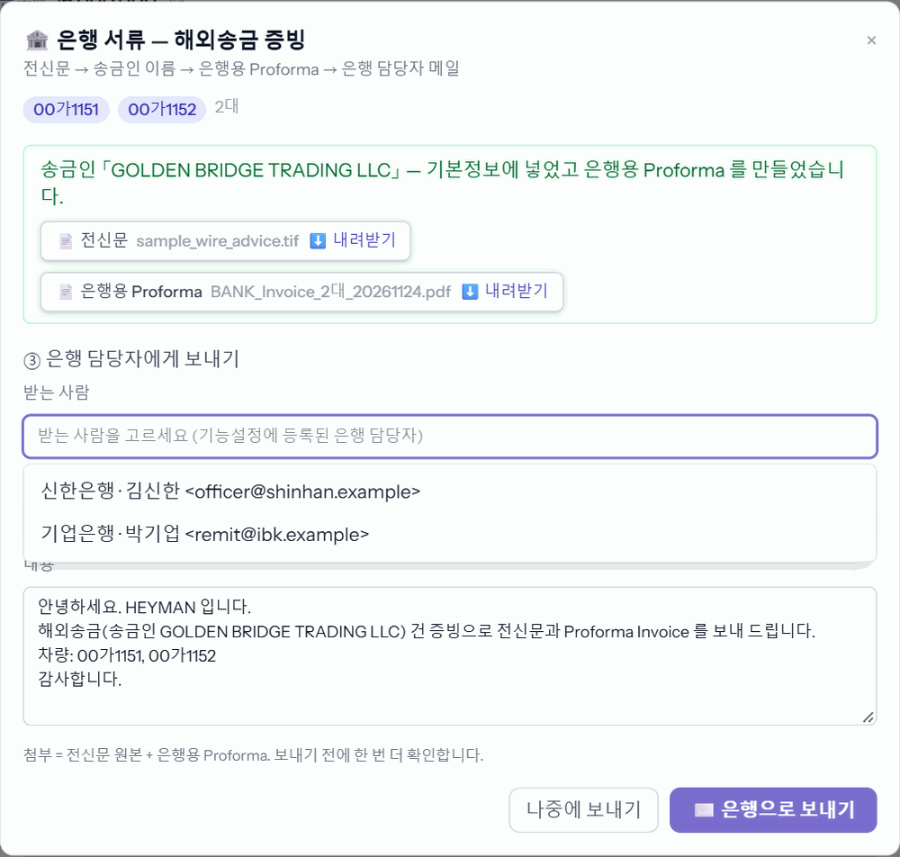
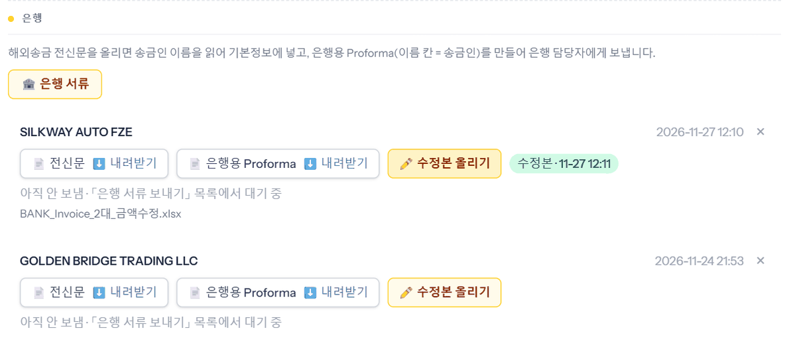

1단계
한 대는 차 창 「서류」 탭의 [은행 서류], 여러 대는 목록에서 체크 → [은행 서류 일괄]
송금 한 건이 여러 대 값이면 그 차들을 같이 체크합니다. 같은 바이어 · 같은 통화 차끼리만 묶이고, 한 번에 최대 30대입니다.
![2대 선택 막대 — 00가1151 · 00가1152 칩, 맨 앞 [은행 서류 일괄] 버튼](01.png)
바이어가 해외송금을 보내면 은행이 「타발해외송금 내도통지」(전신문)를 팩스·메일로 보내옵니다. 이 전신문을 올리면 ERP 가 송금인 이름을 읽어 차의 기본정보에 넣고, 이름 칸만 송금인으로 바꾼 은행용 Proforma 를 만들어 은행 담당자에게 메일로 보냅니다. 판매탭 입금 줄의 전신문 칸과는 별개입니다. 예시 차량 00가1151 · 00가1152, 예시 전신문은 연습용(가짜 이름)입니다.
송금 한 건이 여러 대 값이면 그 차들을 같이 체크합니다. 같은 바이어 · 같은 통화 차끼리만 묶이고, 한 번에 최대 30대입니다.
은행 팩스(TIF)는 글자가 없는 그림이라, 회사 GPU PC 가 그림을 보고 이름을 읽습니다. 보통 5~20초 걸리고, 그동안은 「전신문을 읽고 있습니다」 창이 떠서 다른 버튼이 눌리지 않습니다. 끝날 때까지 기다리면 됩니다.

이름은 전신문 3쪽 「< Debtor >」 아래 Name 줄에서 읽습니다. 초록 줄이 뜨면 읽은 것이고, 이름은 제안이니 아래 쪽 그림과 한 번 비교합니다. GPU PC 가 꺼져 있거나 못 읽으면 칸이 비어 있으니 직접 적습니다. 글자가 살아 있는 PDF 는 GPU 없이 바로 읽습니다.

기본탭 사진 창과 같습니다 — ‹ › 또는 키보드 ←→ 로 쪽을 넘기고, 마우스 휠이나 그림을 한 번 누르면 바로 확대됩니다. 확대한 채로 끌면 옮겨지고, 더블클릭하면 원래 크기, Esc 는 보기 창만 닫습니다.

누르는 순간 고른 차들의 기본정보 「송금인 Name」이 이 이름으로 바뀌고, 은행용 Proforma(일반 Proforma 와 같고 Name 칸만 송금인)가 만들어집니다. 전신문·Proforma 는 [⬇ 내려받기]로 미리 열어 볼 수 있습니다. 은행용 Proforma 는 엑셀 파일이라 내려받아 금액·문구를 고칠 수 있고, 금액 칸은 소수점 두 자리(예: $9,000.50)까지 보이고, SUB TOTAL · TOTAL · BALANCE MONEY 는 차량 줄을 더하는 수식이라 줄 금액을 고치면 합계도 소수점까지 따라 바뀝니다(2026-11-26).
받는 사람은 기능설정에 등록된 은행 담당자 중에서 고릅니다(「신한은행 · 이름 <메일>」). 한 명만 등록돼 있으면 미리 골라져 있고, 여럿이면 직접 고릅니다. 목록에 없는 주소로는 보낼 수 없으니, 담당자가 바뀌면 시스템관리자에게 등록을 부탁합니다. 메일에는 전신문 원본과 은행용 Proforma 가 첨부됩니다. 바로 안 보내려면 [나중에 보내기].

송금인 이름 · 만든 시각 · [전신문] [은행용 Proforma] 내려받기 · 「✉ 받는 사람 · 시각 보냄」(안 보냈으면 「아직 안 보냄」)이 보입니다. 송금을 나눠 받아 여러 번 만들면 한 줄씩 쌓입니다.
잘못 만든 기록은 줄 오른쪽 × 로 지웁니다. 그 차에서만 빠지고, 같이 만든 다른 차에는 남습니다 — 마지막 차에서 지우면 전신문 · Proforma 파일도 지워집니다. 기본정보의 송금인 이름과 보낸 메일 기록은 그대로입니다.
